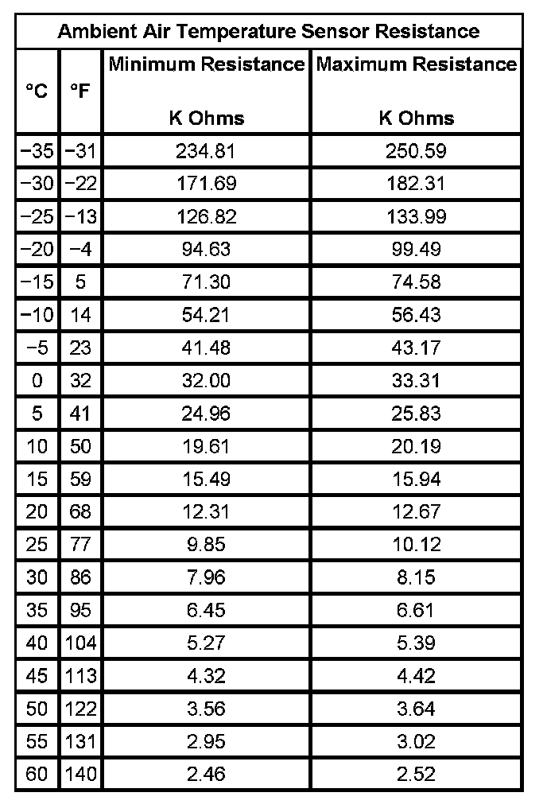

Mirrors - Temperature Display Inaccurate
MIRRORS - TEMPERATURE DISPLAY INACCURATE
DIAGNOSTIC FAULT INFORMATION
Perform the Diagnostic System Check - Vehicle prior to using this diagnostic procedure. Initial Inspection and Diagnostic Overview
CIRCUIT/SYSTEM DESCRIPTION
The inside rear view mirror (ISRVM) applies 5 volts to the ambient air temperature sensor. The ambient air temperature sensor is a thermistor which varies in resistance as the temperature changes. As the resistance of the ambient air temperature sensor increases, the ISRVM senses a larger voltage drop across the sensor, indicating a lower temperature. As the resistance of the ambient air temperature sensor decreases, the ISRVM senses a smaller voltage drop across the sensor, indicating a higher temperature.
DIAGNOSTIC AIDS
Ambient Air Temperature Sensor Resistance:

The table will be used to measure the resistance of the sensor and compare it with the actual ambient temperature. The mirror's temperature accuracy should be within 5 degrees of the actual temperature. The actual temperature should not be taken from a radio station, a sign displaying the temperature, etc. A temperature measuring tool such as a thermometer should be used. Some temperature measuring tools may be within 5 degrees of the actual temperature. Make sure to consult the manufacturer for the accuracy of the tool. This comparison can make the mirror seem off by 5-10 degrees of the actual temperature when it is not.
CIRCUIT/SYSTEM TESTING
1. Ignition OFF, disconnect the harness connector at the ambient air temperature sensor. Install a signal generator and instrument panel tester between the signal circuit and the low reference circuit.
2. Ignition ON, vary the resistance on the signal generator from 2.5K to 230K. Verify that the temperature displayed on the ISRVM matches the ambient temperature resistance chart.
- If the temperature displayed is incorrect, test the signal circuit and the low reference circuit for an open/high resistance. If the circuits test normal, replace the ISRVM.
3. If the temperature displayed is correct, replace the ambient air temperature sensor.
REPAIR INSTRUCTIONS
Perform the Diagnostic Repair Verification after completing the diagnostic procedure. Verification Tests
Control Module References for ISRVM replacement, setup, and programming. Programming and Relearning